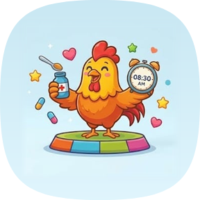

تذكير بمواعيد أدوية الأطفال، لموبايلات أندرويد
امسحوا الكود بكاميرا الموبايل
للأندرويد بس، ومفيش نسخة للآيفون. التطبيق للتذكير بس، ومش بيدي نصايح طبية. الشرح الكامل في ملفات «طريقة التثبيت» و«طريقة الاستخدام». للمساعدة: <TO BE FILLED>